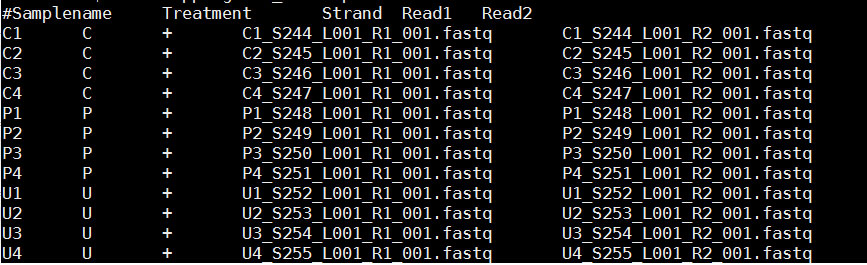

MetaAmp Version 3.0 - Help
MetaAmp has two analysis components. The OTU analysis component clusters the amplicon sequences into OTUs, and the ASV analysis component infers ASVs. Both analysis components can take single or paired-end amplicon sequence files as inputs. While the OTU anlsyis component can take both fasta and fastq format sequence files as inputs, the ASV analysis component can only accept fastq format sequence files.
Please note that "oligos.txt" and "design.txt" file names are reserved by the MetaAmp program and please avoid naming your sequence and mapping files with the same names.
Mock community testing data set is available at: download page.
How to make an archive of sequence files:
To make an archive file, Firstly, you create a directory or folder. Secondly, you copy your fastq or fasta format sequence files into the directory or folder. And Third, you can archive this directory or folder with your favorite program such as tar, zip.
Please note:
- The squence files in an archive are the demultiplexed fastq or fasta format sequence files. Those sequence files can be uncompressed or commpressed (gz) format.
- When the sequences are in "fastq" format, the file name extension must be ".fastq". The interleaved fastq format files for paired-end sequencing are not supported. The paired-end read1 and read2 files must be in the seperated files.
- When the sequences are in "fasta" format, the file name extensions must be ".fna" or ".fasta" for sequence files and ".qual" for quality files. Providing quality files for the fasta format sequences will help to get better analysis results. When the quality files are supplied, the pairs of the fasta and quality files indicated by two file names differing only in their extensions.
- The compressed archived file can speed up the file uploading. The archive formats below are supported:
- zip: Zip compressed file (.zip, .jar or .par)
- tgz: Gzip compressed tar file (.tgz or .tar.gz)
- tar: Standard tar file (.tar)
- tbz: Bzip2 compressed tar file (.tbz or .tar.bz2)
- txz: Xz compressed tar file (.txz or .tar.xz)
- gz: Gzip compressed file (.gz)
- Z: Lempel-Ziv compressed file (.Z)
- bz2: Bzip2 compressed file (.bz2)
- xz: Xz compressed file (.xz)
- lzma: Lzma compressed file (.lzma)
How to make a mapping file:
MetaAmp uses the information in the mapping file to assocaite sequence files in an archive with smaples and their metadata. The mapping file is a space-delimlited text file.
In the MetaAmp OTU analysis, the mapping file of the single end sequence analysis has four required columns (#samplename, Treatment or condition, Strand, Read1) and the mapping file of the paired-end sequence analysis has five required columns (#samplename, Treatment or condition, Strand, Read1, Read2).
In the MetaAmp ASV analysis, the mapping file of the single end sequence analysis has four required columns (#samplename, Treatment or condition, Strand, Read1) and one optional fifth column (runid). Without the fifth runid column, all the sequence files will be assumed from the same sequencing run and will be processed together. The mapping file of the paired-end sequence analysis has five required columns (#samplename, Treatment or condition, Strand, Read1, Read2) and one optional sixth column (runid). When the optional last column for single end or paired-end sequence provided, MetaAmp will learn the error rate from each run individually becasue different sequenec runs can have different error profiles. Without the sixth runid column, all the sequence files will be assumed from the same sequencing run and will be processed together.
In the mapping file, please note:
- The short sample names will make the MetaAmp visualization looking better.The sample name must be unique and can only contain characters, numbers and underscore [a-zA-z0-9_]. No spaces and no hyphens are allowed in the sample name and also a smaple name cannot start with nubmers.
- The Strand column accepts "+|-" signs. It's orientation of the amplicon sequence in read 1 file.
- Each or each pair of the sequencing files can only belong to one sample
- Please group your samples by treatments or conditions ( for example control vs. disease, time_0 vs. time_1week). This is very important for the hypothesis test. From time to time, I have seen users just copied sample name column to the treatment or condition column. The MetaAmp will still run but the statistical testing result will not make sense at all.
A paired-end sequencing mapping file example withour the sixth optional columnis as following. In the mapping file, the first line is the header line, which is optional. The header starts with the sharp chararter "#".

A paired-end sequencing mapping file example with the sixth optional columnis as following.
A single-end sequencing mapping file example is as following.It has four columns.

A single-end sequencing mapping file example with five columns.
Forward and reverse primers:
- The primers are the amplicon primers (not adapter, sequencing primer) and the orientations are from 5' to 3'
- The forward and reverse primers can also be degenerate using standard IUPAC nomenclature.
- Primers can be upper or lower case letters.
- multiple forward/reverse primers must be entered in the separate lines in the box.
- For the paired-end sequencing, the forward primers are the primers you used to generated your R1 read, the reverse primers are the primers you used to generate R2 reads.
- For the single-read sequencing, the forward primers are best thought of as the forward sequencing primer. So if you are using the 16S rRNA primers 27f and 338r to generate sequencing substrate, but you are sequencing off of the 338r end of the fragment, you would list 338r as the forward primer and 27f as the reverse. If your target region is longer than the length which your sequencing platform can generate, you should leave the reverse primer box as empty, in this way, you are telling the program to only screen the primer at the front.
Energy Bioengineering Group in Department of Geoscience at Univeristy of Calgary